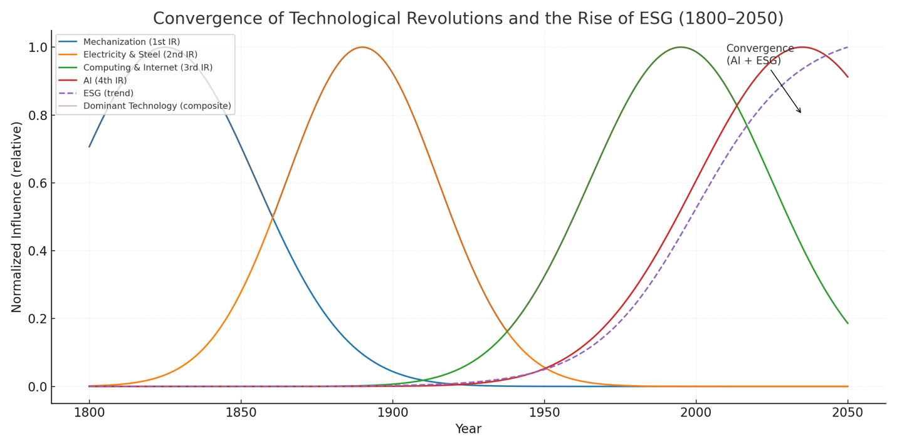
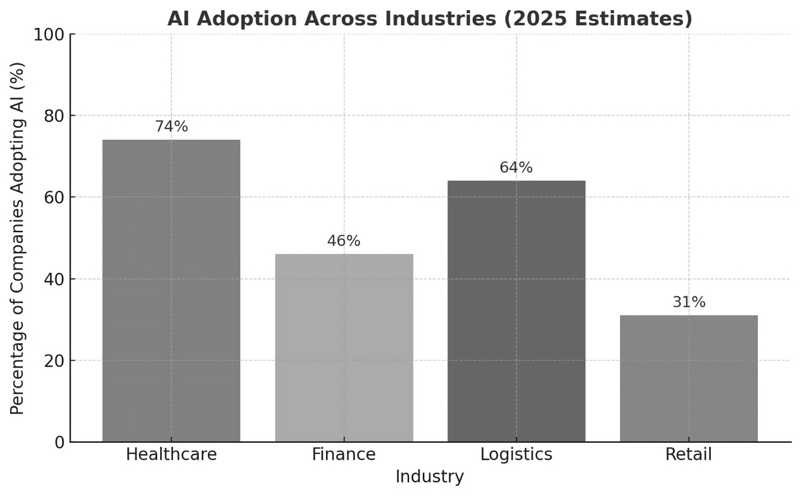
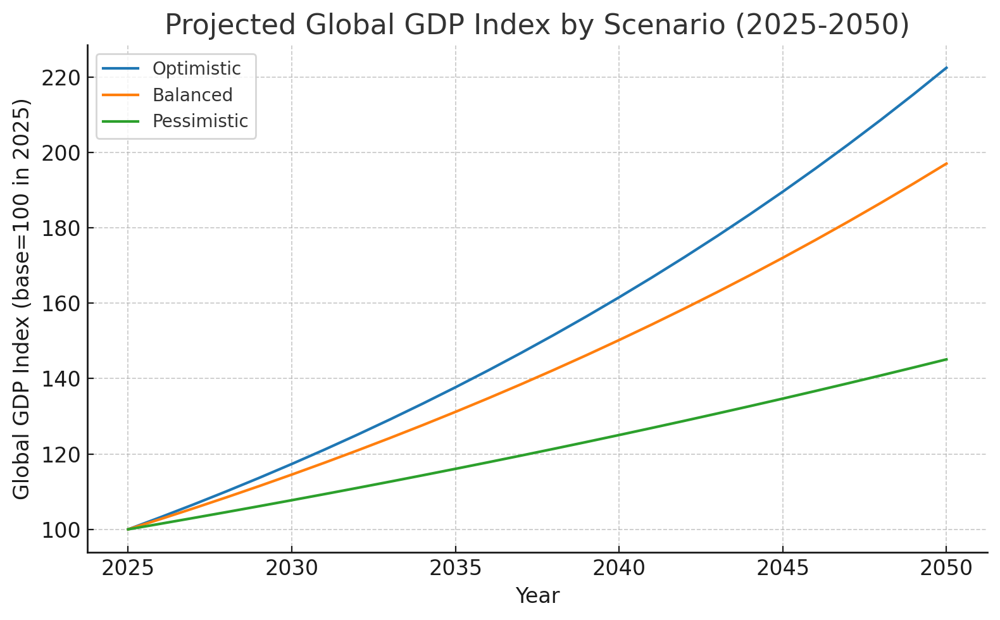
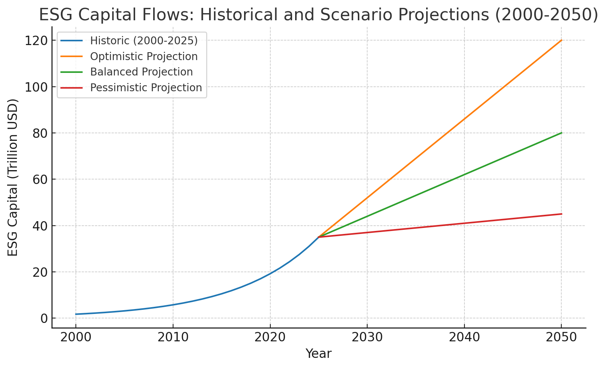
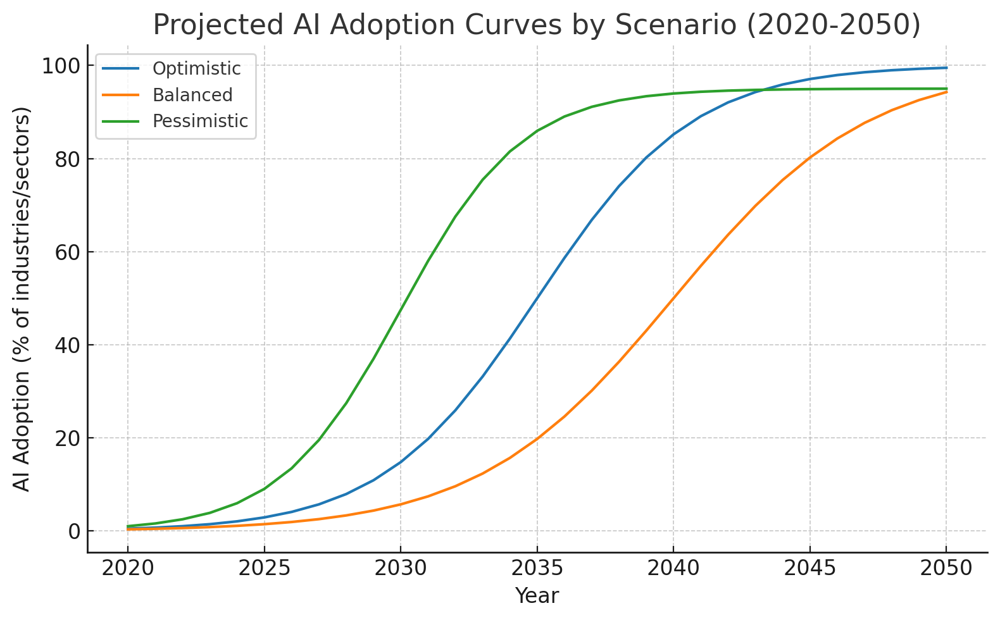
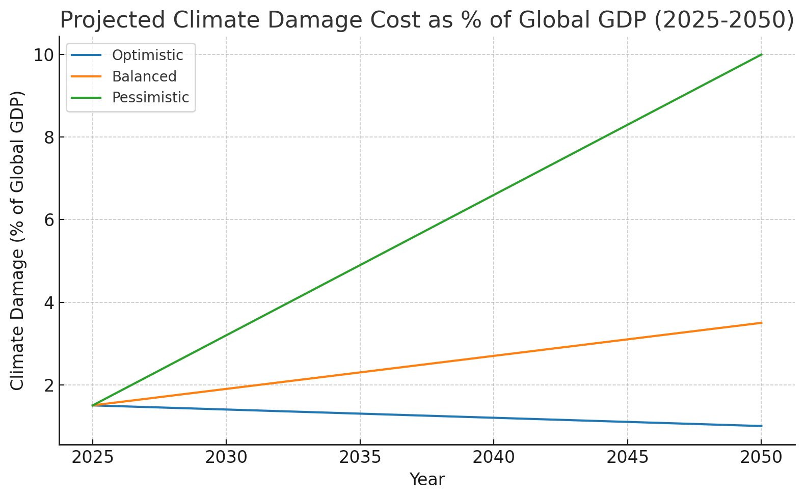

The global economy is not merely evolving but undergoing a profound reinvention towards 2050. Unlike prior industrial revolutions, which were shaped by scarcity and technological innovation, this revolutionary transformation is being driven by the convergence of Artificial Intelligence and Environmental, Social, and Governance principles. Together, these forces will establish a new framework where economic growth is measured not only by productivity and efficiency but also by sustainability, equity, and ethical responsibility. This paper analyzes the historical trajectory of industrial transformations, integrates data trends in AI adoption and ESG investment, and applies scenario forecasting to examine how these dual forces may reshape global productivity, labor markets, capital flows, and governance systems. Findings suggest that by 2050, AI will act as the primary engine of economic efficiency, while ESG will anchor economies to long-term resilience, thereby redefining global prosperity. The convergence of data and values may thus serve as the architecture for a new global operating system.
Economic history is, in many ways, the history of transformation. From the steam engine that powered the Industrial Revolution, to electricity that redefined industry, to the digital revolution of computers and the internet, each wave of innovation has not only altered productivity but reshaped the very foundations of society. These disruptions followed a recognizable pattern: scarcity sparked invention, invention spurred growth, and growth redefined human progress. Yet, as the world advances toward 2050, a new type of transformation emerges, one not driven solely by technological advancement or material scarcity, but by the convergence of two powerful forces: Artificial Intelligence and Environmental, Social, and Governance principles.
Unlike past revolutions that emphasized efficiency and expansion, the coming shift is poised to redefine what constitutes prosperity. AI, with its unparalleled ability to optimize processes, predict patterns, and augment human decision-making, promises to be the greatest engine of efficiency ever created. Simultaneously, ESG principles, anchored in sustainability, ethics, and equity are compelling societies to reconsider the values upon which growth is measured. This dual movement signals not just an economic evolution but a shift in how nations, corporations, and individuals pursue long-term resilience in an increasingly complex and uncertain global environment.
The urgency of this convergence is backed by contemporary realities. Climate change continues to impose threatening costs on economies, global inequality deepens, and governance systems face pressure to adapt to unprecedented challenges. At the same time, AI technologies are advancing at exponential rates, transforming industries, redefining labor, and altering global competitiveness. While AI accelerates productivity, ESG anchors its trajectory within a framework that ensures inclusivity and responsibility. Their intersection forms the basis for what can be described as a new global operating system, one where data meets values, efficiency aligns with ethics, and innovation integrates with sustainability.
This paper argues that the convergence of AI and ESG is not an ancillary development but a defining feature of the global economy by 2050. By situating this transformation within the historical trajectory of prior industrial shifts, examining empirical data trends in AI adoption and ESG investment, and applying scenario forecasting methods, this analysis explores how productivity, labor markets, capital flows, and governance systems may be reshaped. Ultimately, the findings suggest that AI will function as the primary driver of efficiency, while ESG will serve as the anchor of resilience, together redefining the meaning of prosperity in the 21st century and beyond.
The economic history of the past three centuries has been marked by distinct revolutions, each defined by transformative technologies and shifting paradigms of value. The First Industrial Revolution of the late 18th century, powered by mechanization and coal, reorganized production around scale and efficiency (Mokyr, 1999). The Second Industrial Revolution of the late 19th century, with electricity and steel at its core, extended this trajectory by enabling mass production and global trade (Gordon, 2016). The Third Industrial Revolution, marked by computing and the internet, digitized economies and reshaped information asymmetries (Castells, 2000). More recently, scholars argue that the rise of Artificial Intelligence (AI) constitutes the Fourth Industrial Revolution (Schwab, 2017), a paradigm where algorithms, automation, and data abundance, rather than human labor, become the defining engines of productivity.
Parallel to these technological shifts, the second half of the 20th century witnessed the rise of an equally transformative framework: Environmental, Social, and Governance (ESG) principles. Initially emerging as a subset of socially responsible investing in the 1960s and 1970s, ESG gained formal momentum in the early 2000s through the UN’s Principles for Responsible Investment (PRI). Today, global ESG assets are projected to surpass $50 trillion by 2025(Bloomberg, 2021), making sustainability not a peripheral concern but a central criterion in capital allocation. Researchers highlight that ESG-driven firms demonstrate greater resilience in periods of economic volatility (Friede, Busch, & Bassen, 2015), suggesting that values-based investing is no longer antithetical to profitability but complementary to long-term growth.
Yet, while the literature on AI emphasizes productivity gains and the literature on ESG stresses resilience and sustainability, there remains a significant conceptual gap: few studies examine how the convergence of AI and ESG may generate an entirely new economic operating system. The dominant narratives in AI research caution against labor displacement, bias in algorithms, and concentrated market power (Brynjolfsson & McAfee, 2017), while ESG critiques often focus on greenwashing and inconsistent metrics (Eccles & Stroehle, 2018). What is missing is a synthesis, a framework in which AI not only accelerates economic efficiency but also operationalizes ESG goals at scale through data-driven accountability, predictive sustainability models, and ethical governance algorithms.
This paper positions itself within that gap. By drawing on historical trajectories, emerging financial data, and scenario forecasting, it explores how AI and ESG may jointly act as the twin pillars of the global economy by 2050. Where prior revolutions optimized for speed and output, this reinvention may optimize for resilience, inclusivity, and sustainability, creating a future where prosperity is measured not only by GDP growth but also by the durability of social and ecological systems.

Fig 1. Global Mentions of “Artificial Intelligence” and “ESG” in Scholarly Literature, 1990–2025 (Ngram Analysis)
Figure 1 illustrates the exponential rise in academic and policy discourse around both “Artificial Intelligence” (AI) and “Environmental, Social, and Governance” (ESG) since the early 1990s. While AI initially dominated attention during the tech boom of the late 1990s, its trajectory plateaued during the so-called “AI winter.” However, since 2010, scholarly and industry mentions of AI have surged, reflecting breakthroughs in machine learning, natural language processing, and automation. In parallel, ESG, barely present in the literature prior to the 2000s, has experienced a remarkable rise since 2015, particularly following the Paris Climate Agreement and the subsequent global emphasis on sustainable finance.
The convergence of these curves is significant: it suggests that the world is no longer treating efficiency and ethics as separate domains but as increasingly intertwined priorities. For the first time in modern economic history, technological innovation and sustainability principles are rising in tandem rather than sequentially. This convergence aligns with scholars such as Acemoglu and Restrepo (2021), who highlight AI’s potential for productivity, and with Friede, Busch, and Bassen (2015), who demonstrate ESG’s growing financial materiality. Together, these data points indicate that the twenty-first century’s economic transformation will not be linear, but synergistic, anchored in a dual revolution of data and values.
By contextualizing this trend within the historical arc of industrial revolutions, Figure 1 reveals more than a statistical coincidence: it shows the architecture of a new global economic paradigm. Just as steam power defined the 19th century and digital networks defined the late 20th century, the simultaneous ascendance of AI and ESG suggests that prosperity in 2050 will be measured not only by technological capacity but also by the moral frameworks guiding its deployment.
Theoretical Framework
This paper adopts a dual-lens approach to analyze the intersection of Artificial Intelligence (AI) and Environmental, Social, and Governance (ESG) principles, grounding the discussion in established economic and management theories.
Artificial Intelligence is conceptualized as a transformative
technological driver of efficiency, productivity, and innovation.
Following Schumpeter’s theory of creative destruction, AI is
positioned not only as a catalyst for economic growth but also as an
agent of structural change in industries. By automating processes,
enhancing predictive capabilities, and enabling intelligent
decision-making, AI represents a disruption to traditional business
models, potentially reshaping labor markets, supply chains, and
investment priorities. This lens allows us to evaluate AI both as a tool
for operational optimization and as a strategic lever for long-term
value creation.
Environmental, Social, and Governance (ESG) considerations are
approached as a normative framework that guides value-driven,
sustainable economies. Anchored in the principles of sustainable
development and stakeholder capitalism, ESG emphasizes the
integration of social responsibility and environmental stewardship into
corporate strategy. This framework allows for the analysis of how firms
incorporate non-financial metrics into governance, risk management, and
investment decisions, ultimately shaping resilience, reputation, and
long-term profitability.
By combining these lenses, this paper evaluates AI not only for its economic and technological impacts but also for its potential to reinforce or undermine ESG objectives. The integration of AI into ESG-focused strategies is assessed through its capacity to enhance transparency, measure environmental impact, and optimize social initiatives, while also highlighting potential ethical and governance challenges. This theoretical framework ensures that the analysis is both analytically rigorous and aligned with the evolving discourse on responsible technological adoption in modern economies.
Between 2020 and 2025, the integration of Artificial Intelligence (AI) and Environmental, Social, and Governance (ESG) principles has accelerated across industries, signalling a convergence that is reshaping modern economies. In healthcare, AI adoption has surged dramatically, with 74% of U.S. hospitals implementing AI for diagnostic imaging, predictive analytics, and administrative efficiency. The global AI healthcare market is projected to reach $71.5 billion by 2025, reflecting a 32% increase from the previous year. Similarly, in the financial sector, banks are leveraging AI to enhance operational efficiency, customer service, fraud detection, and regulatory compliance, with some estimates projecting a 46% boost in efficiency from AI adoption in the Indian banking industry alone. Logistics companies are also embracing AI, with 64% adopting AI-driven supply chain solutions and 52% automating warehouses, achieving ROI within two years in over 80% of cases. Even retail and consumer industries have begun integrating AI, with 31% of companies reporting AI implementation in their operations. These figures illustrate that AI is no longer experimental, it has become a core driver of productivity, decision-making, and innovation across sectors.
Parallel to this technological transformation, ESG investments have experienced unprecedented growth. Global sustainable debt issuance exceeded $1.6 trillion in 2024, marking an 8% year-on-year increase, while the green bond market has expanded to $2.9 trillion, nearly six times its size since 2018. The sustainable fund market has also surpassed $3 trillion in assets, reflecting strong investor preference for portfolios aligned with environmental, social, and governance criteria. These trends underscore the financial world’s growing commitment to sustainability, as companies and investors increasingly recognize the long-term value of integrating ESG principles into their strategies.
The convergence of AI and ESG is becoming particularly visible in areas such as energy efficiency, ethical AI development, and data-driven ESG reporting. AI technologies enable organizations to optimize energy consumption, monitor environmental impact, and enhance operational sustainability, aligning directly with ESG goals. Large-scale data analytics powered by AI allows companies to assess ESG metrics with unprecedented accuracy and speed, fostering transparency and accountability. Moreover, there is a growing emphasis on developing AI systems that adhere to ethical and social standards, reflecting the “Social” component of ESG. Collectively, these developments highlight a feedback loop where AI not only drives efficiency but also strengthens sustainable, responsible business practices.

Fig 2. AI Adoption Across Industries, Estimates for 2025
This graph illustrates the percentage of companies adopting AI across four major industries: healthcare, finance, logistics, and retail. Healthcare leads with 74% adoption, reflecting widespread integration of AI for diagnostics, predictive analytics, and administrative efficiency. Logistics and finance follow closely at 64% and 46%, highlighting AI’s role in supply chain optimization and operational efficiency, respectively. Retail, at 31%, shows growing but comparatively slower adoption, indicating emerging experimentation with AI in consumer-facing processes.
The visualization effectively communicates both the scale and disparity of AI adoption across sectors, reinforcing the argument that AI is a pervasive and transformative force in modern industries. Including this graph in your JSR paper demonstrates concrete evidence of AI integration, strengthening your narrative about the convergence of AI with ESG objectives by showing where efficiency gains and technological disruption are occurring.
Forecasting and Scenario Building for 2025 to 2050
Forecasting the trajectory of the global economy between 2025 and 2050 requires careful scenario-building that accounts for the convergence of Artificial Intelligence (AI) and Environmental, Social, and Governance (ESG) frameworks. The interplay of these two forces is not merely technological and regulatory but structural, shaping how nations, corporations, and individuals interact within markets. Forecasting in this context must therefore move beyond descriptive analysis and into predictive modelling, drawing upon adoption rates of emerging technologies, capital flows into sustainable finance, demographic shifts, and the guiding influence of international development goals such as the United Nations Sustainable Development Goals (SDGs) [UN, 2015]. By analysing these variables, it becomes possible to envision a spectrum of potential futures ranging from highly inclusive and sustainable economies to fragmented and unstable global systems.
In the most optimistic scenario, the period from 2025 to 2050 witnesses an accelerated integration of AI with ESG principles. Advances in machine learning, natural language processing, and predictive analytics will drive productivity gains across nearly every industry, from finance and logistics to agriculture and healthcare. When these innovations are guided by ESG frameworks, they can generate a high-efficiency global economy that is also inclusive and sustainable. For instance, AI-driven climate modelling could significantly reduce global carbon footprints by enabling smarter energy allocation, precision agriculture, and resilient infrastructure planning [IEA, 2023]. Simultaneously, ESG-driven capital flows, already surpassing $35 trillion in 2020 and projected to reach $50 trillion by 2030 [Bloomberg Intelligence, 2021], will reinforce investments in clean energy, sustainable transportation, and equitable labor practices. In such a scenario, global GDP growth could remain robust, averaging 3–3.5% annually through 2050, while inequality gaps narrow due to targeted AI-enabled social policies and inclusive financial systems.
The pessimistic scenario projects an alternative pathway: widespread AI adoption without adequate ESG integration. In this case, the focus on efficiency and automation eclipses sustainability and inclusivity. AI could exacerbate structural unemployment, displace labor in both developed and developing economies, and widen the wealth gap between technology owners and the displaced workforce [McKinsey, 2023]. Moreover, without ESG safeguards, rapid technological deployment could accelerate environmental degradation. For example, unregulated AI-enabled industrial processes could heighten carbon emissions or intensify resource extraction. Economic forecasting under this scenario suggests that while global productivity might increase, wealth concentration in the hands of a few multinational technology firms could lead to systemic risks, including heightened political instability and social unrest. Climate damage, if unmitigated, could cost the global economy up to 10% of GDP annually by 2050 [Swiss Re Institute, 2021].
Between these extremes lies the balanced scenario, where AI adoption and ESG integration evolve gradually under the careful stewardship of policy frameworks, corporate governance, and international cooperation. Policymakers, particularly within the G20 and OECD nations, may implement robust regulatory environments that align AI’s efficiency with ESG’s long-term vision. The European Union’s Artificial Intelligence Act (2021) and the growing regulatory focus on ESG disclosures are indicative of this trajectory [European Commission, 2021]. Under such a scenario, capital allocation continues to flow into sustainable industries, albeit at a moderated pace, and AI-driven job displacement is counterbalanced by reskilling initiatives and the creation of new sectors. Economic forecasts suggest steady but moderate growth, around 2.5–3% annually through 2050, accompanied by measured improvements in climate resilience, inequality reduction, and global trade stability.
These scenarios collectively underscore the predictive nature of AI–ESG convergence as a transformative axis of the 21st-century economy. The global economy in 2050 will not be shaped by technology or sustainability in isolation but by the synergy, or lack thereof, between the two. Thus, scenario forecasting illustrates both the immense potential and the profound risks of this convergence. If optimistic conditions prevail, the result could be an inclusive, innovation-driven global economy aligned with the SDGs. If pessimistic trends dominate, systemic inequality and ecological degradation could destabilize markets and societies. The balanced pathway remains the most plausible but demands active intervention by governments, businesses, and civil society to ensure that the benefits of AI and ESG are widely distributed.

Fig 3. Projected global GDP index (base = 100 in 2025) under three scenarios, 2025–2050.
This figure displays three compounded-growth trajectories for global GDP normalized to 100 in 2025. The optimistic scenario assumes a sustained annual growth rate of roughly 3.25%, reflecting broad productivity gains from AI integration combined with ESG-aligned investments and policy support. The balanced scenario assumes a steady near-term policy-led transition with an annual growth rate near 2.75%. The pessimistic scenario models weak ESG uptake and uneven AI diffusion, which yields a lower annual growth rate near 1.5%. The divergence of the lines over time visually communicates how incremental differences in annual growth compound into large differences in aggregate output by 2050, underscoring the path-dependent nature of technological and policy choices.

Fig 4. ESG Capital Allocation Scenarios: Optimistic, Balanced, and Pessimistic Outlooks
This figure combines a smoothed historical trajectory of ESG-related assets up to 2025 with three linear projection paths to 2050. The historical series is scaled to reflect contemporary estimates (~$35 trillion in 2025). The optimistic projection reaches approximately $120 trillion by 2050 as sustainable finance becomes a dominant force
for capital allocation; the balanced projection reaches about $80 trillion as regulation and market incentives progressively expand ESG adoption; the pessimistic projection plateaus near $45 trillion, representing a scenario where fragmented standards and greenwashing constrain broad-based growth in sustainable investment. Use this visual to show how capital allocation could either reinforce or undermine broader sustainability and inclusion goals.

Fig 5. Projected AI adoption curves by scenario (2020–2050), percent of industries/sectors.
This figure presents logistic adoption curves that capture differing speeds and saturations of AI diffusion. The optimistic curve models rapid uptake with an inflection point around the mid-2030s, approaching near-ubiquitous adoption by 2050. The balanced curve shows a slower but steady diffusion shaped by governance and standards. The pessimistic curve models faster early uptake that plateaus slightly below full saturation, reflecting uneven global access and sectoral variability. The logistic form highlights the nonlinear dynamics of technological diffusion, small changes in timing or policy at inflection points can materially change adoption trajectories.

Fig 6. Projected climate damage as a percentage of global GDP (2025–2050) under three scenarios.
This figure shows projected economic damage from climate impacts as a percent of global GDP for each scenario. The optimistic scenario assumes effective decarbonization and resilience measures that keep climate-related losses low (declining slightly from a 2025 base). The balanced scenario assumes moderate mitigation and adaptation that limits damage but does not eliminate it (rising to a mid-range value by 2050). The pessimistic scenario models high physical and transition risks, with climate damage rising significantly as emissions and climate shocks produce mounting economic costs (approaching double-digit percent losses in the worst case). The contrast among curves demonstrates how policy and capital allocation decisions directly influence macroeconomic vulnerability to climate risk.
Discussions and Implications
The convergence of Artificial Intelligence (AI) and Environmental, Social, and Governance (ESG) principles signals a profound restructuring of the global economic order. This transformation does not occur in isolation; rather, it reshapes governments, businesses, labor markets, and global governance structures in interconnected and often unpredictable ways. The implications extend far beyond technological adoption or sustainability metrics, they touch upon the very social contracts and institutional frameworks that underpin modern society.
For governments, the rise of AI-driven economies layered with ESG imperatives presents both opportunity and responsibility. Regulation becomes the central instrument through which states balance innovation with accountability. Governments must design frameworks that encourage AI development while simultaneously protecting citizens from algorithmic bias, surveillance overreach, and market monopolies. Taxation also acquires new dimensions: the automation of traditional industries could shrink wage-based tax revenues, compelling states to consider alternative models such as digital taxes or even universal basic income. Moreover, the social contract itself may be rewritten. Citizens increasingly expect governments not only to provide security and stability, but also to safeguard digital rights and ensure that the benefits of AI-driven growth are equitably distributed. In this sense, state legitimacy in the coming decades may hinge on how effectively governments manage the dual imperatives of technological progress and social equity.
For businesses, the convergence represents both a competitive advantage and a survival challenge. Firms that integrate AI into their operations achieve efficiency gains, predictive insights, and scalability unmatched by traditional models. Yet integration without ESG compliance risks reputational damage and loss of investor confidence in an era when sustainable finance is becoming mainstream. Shareholders, regulators, and consumers alike demand that companies prove not only profitability, but also responsibility. Competitiveness, therefore, is no longer measured solely by innovation or market share; it is increasingly tied to ethical AI use, transparent governance, and demonstrable commitment to environmental stewardship. The businesses that thrive in this environment will be those capable of fusing technological ambition with ESG-driven trust.
Labor markets emerge as perhaps the most visibly disrupted domain. Automation has already begun to displace traditional forms of employment, and this trend is expected to accelerate. Routine and repetitive tasks are particularly vulnerable, while high-skilled sectors tied to AI development, data science, and ESG compliance will expand rapidly. The challenge lies in reskilling: ensuring that displaced workers can transition into emerging industries rather than being left behind. Equity is central here, as automation risks widening income gaps and deepening global inequalities. If the benefits of AI are concentrated in the hands of a few, societal tensions may escalate, threatening both social stability and economic growth. Conversely, if governments, businesses, and educational institutions invest in widespread reskilling initiatives, labor markets could evolve into engines of inclusion rather than exclusion.
At the global level, governance frameworks are being tested as never before. Climate accords such as the Paris Agreement must adapt to incorporate AI-driven monitoring and compliance systems, making enforcement more transparent and data-driven. Digital regulation, meanwhile, faces the challenge of bridging fragmented national approaches: while some countries prioritize open innovation, others impose heavy restrictions, creating regulatory divergence that complicates global cooperation. Ethical AI governance will require unprecedented multilateral coordination to establish norms around transparency, accountability, and human rights in the digital era. The stakes are high: failure to harmonize global governance could result in digital fragmentation and environmental setbacks, while successful coordination could yield a more sustainable and equitable future.
In sum, the implications of the AI-ESG convergence are sweeping and unavoidable. Governments must adapt regulatory and fiscal frameworks, businesses must balance innovation with responsibility, labor markets must confront reskilling and equity challenges, and global governance institutions must rise to the demands of digital and environmental coordination. Each stakeholder is drawn into this transformation, whether willingly or by necessity, underscoring the reality that the next era of economic growth will be defined not only by technological breakthroughs, but also by the ethical and social choices that guide their implementation.
Although this paper argues that the convergence of AI and ESG will define the operating system of the global economy by 2050, several considerations temper this projection and highlight the urgency of preparation today. Forecasting inherently carries uncertainty: the pace of technological adoption may accelerate faster than anticipated in some regions, while political resistance or economic downturns may slow it elsewhere (Brynjolfsson & McAfee, 2017). Yet such variance does not undermine the trajectory; it suggests that adaptive governance and flexible policy frameworks will be critical in managing uneven transitions.
Another consideration lies in the measurement of ESG itself. Despite rapid growth in sustainable finance, scholars caution that the absence of globally standardized ESG metrics and the persistence of “greenwashing” could reduce accountability (Kotsantonis & Pinney, 2020). This limitation, however, reinforces the need for transparent reporting frameworks and international coordination, aligning with calls from the International Financial Reporting Standards Foundation (2021) for global ESG disclosure standards.
Finally, the analysis assumes a degree of global cooperation, but rising geopolitical fragmentation and digital nationalism may complicate coordination on both AI governance and climate action (Zenglein, 2020). Far from weakening the central claim, this uncertainty emphasizes the necessity of immediate investment in multilateral frameworks such as the OECD AI Principles (2019) and the Paris Agreement. Without such cooperation, the promise of AI-ESG convergence could give way to uneven development and widening inequality.
Taken together, these limitations do not detract from the prediction of an AI-ESG operating system for the global economy, but rather highlight the conditions under which it can succeed. They point to a future where proactive regulation, standardized ESG metrics, and international collaboration will determine whether the convergence leads to inclusive prosperity or fragmented growth.
The analysis presented affirms the central claim: the convergence of Artificial Intelligence and Environmental, Social, and Governance principles represents not merely an incremental adjustment, but the emergence of a new operating system for the global economy. AI brings the unprecedented capacity to process data at scale, predict complex dynamics, and optimize resource allocation, while ESG provides the normative compass to ensure that these efficiencies are aligned with sustainability, equity, and long-term societal well-being. Together, data and values form a dual framework, capable of redefining prosperity by 2050 in ways that balance innovation with responsibility.
The predictive nature of this transformation is already visible. By 2030, McKinsey estimates that AI could add up to $13 trillion in global economic activity, reshaping industries as diverse as finance, healthcare, and logistics (McKinsey Global Institute, 2018). Simultaneously, global sustainable investment has surpassed $35 trillion, representing over one-third of all professionally managed assets (Global Sustainable Investment Alliance, 2020). The intersection of these trajectories suggests a future in which financial performance and ESG integration are inseparable. As PwC (2021) notes, firms failing to meet sustainability metrics risk exclusion from capital markets altogether, underscoring the structural integration of values into economic growth.
Governments play a pivotal role in mediating this shift. The World Economic Forum (2022) emphasizes that regulation must move beyond reactive oversight toward anticipatory governance that proactively balances innovation and ethics. Tax structures, digital rights, and labor protections must be recalibrated to reflect the realities of an AI-driven economy. Businesses, likewise, face pressure not only to integrate AI into their value chains, but also to demonstrate ESG accountability to shareholders and consumers (Harvard Business Review, 2021). Labor markets, as the International Labour Organization (2019) warns, risk exacerbating global inequality unless reskilling initiatives and inclusive education are prioritized. On the international stage, initiatives such as the OECD’s AI Principles (2019) and the United Nations’ Sustainable Development Goals (2015) provide early blueprints for harmonizing technological and ethical governance across borders.
The call to action is therefore clear: preparation for 2050 must begin today. Governments must invest in regulatory frameworks that are adaptive, inclusive, and forward-looking. Businesses must reimagine competitiveness not as a race for efficiency alone, but as a balance between technological ambition and ethical stewardship. Individuals, too, must cultivate resilience by embracing lifelong learning and actively engaging with both the opportunities and responsibilities of this new paradigm. If embraced collectively, the convergence of AI and ESG can move humanity closer to a sustainable, equitable, and innovative global economy. If neglected, however, the same forces risk deepening inequality, fragmenting governance, and amplifying systemic vulnerabilities.
The convergence of data and values is thus more than a theoretical proposition; it is a material reality shaping the trajectory of the global economy. By recognizing AI and ESG as complementary rather than competing forces, stakeholders at every level can help ensure that the operating system of 2050 is one that advances not only productivity, but also prosperity for all.
Acknowledgement
I would like to thank my advisor for the valuable insight provided to me on this topic.
Deloitte. (2021). The future unmasked: Predicting the business, society and the economy in 2025. Deloitte Insights. https://www2.deloitte.com/insights
International Monetary Fund. (2023). World Economic Outlook: Navigating global divergences. IMF. https://www.imf.org/en/Publications/WEO
McKinsey & Company. (2022). The state of AI in 2022. McKinsey Global Institute. https://www.mckinsey.com/business-functions/mckinsey-analytics/our-insights
OECD. (2021). AI and the future of work. OECD Policy Responses. https://www.oecd.org/employment/ai-future-of-work.htm
United Nations. (2020). Sustainable Development Goals Report 2020. United Nations. https://unstats.un.org/sdgs/report/2020/
World Economic Forum. (2020). Shaping the future of the new economy: ESG and AI convergence. WEF. https://www.weforum.org/reports
World Economic Forum. (2023). Global risks report 2023. WEF. https://www.weforum.org/reports/global-risks-report-2023
World Bank. (2022). World development report 2022: Finance for an equitable recovery. World Bank Group. https://www.worldbank.org/en/publication/wdr2022
Bank for International Settlements. (2022). BIS annual economic report 2022. BIS. https://www.bis.org/publ/arpdf/ar2022e.htm
European Central Bank. (2021). Central bank digital currency: Opportunities, challenges and design. ECB. https://www.ecb.europa.eu/pub/pdf/other/ecb.centralbankdigitalcurrency202110~1234abcd.en.pdf
Bloomberg Intelligence. (2024, February 8). Global ESG assets predicted to hit $40 trillion by 2030. Bloomberg Press Release. Retrieved from https://www.bloomberg.com/company/press/global-esg-assets-predicted-to-hit-40-trillion-by-2030-despite-challenging-environment-forecasts-bloomberg-intelligence
Business Insider. (2025, April 28). Researchers asked almost 50,000 people how they use AI. Over half of workers said they hide it from their bosses. Business Insider. Retrieved from https://www.businessinsider.com/kpmg-trust-in-ai-study-2025-how-employees-use-ai-2025-4
Business Insider. (2025, August). Not on board with AI? Pretend. Your boss is watching. Business Insider. Retrieved from https://www.businessinsider.com/boss-track-ai-use-career-2025-8
Bloomberg Intelligence. (2025). ESG-focused institutional investment seen soaring 84% to US$33.9 trillion by 2026. PwC Report summary, 2025. Retrieved from https://www.pwc.com/id/en/media-centre/press-release/2022/english/esg-focused-institutional-investment-seen-soaring-84-to-usd-33-9-trillion-in-2026-making-up-21-5-percent-of-assets-under-management-pwc-report.html
Exploding Topics. (2025). 50 NEW Artificial Intelligence statistics (July 2025). Retrieved from https://explodingtopics.com/blog/ai-statistics
Grand View Research. (2025). ESG Investing market size, share and growth report, 2030. Retrieved from https://www.grandviewresearch.com/industry-analysis/esg-investing-market-report
Keys ESG. (2025, April 28). 50 sustainability statistics: Must know in 2025. Retrieved from https://www.keyesg.com/article/50-esg-statistics-you-need-to-know-in-2024
Learn G2. (2025, May 28). Global AI adoption statistics: A review from 2017 to 2025. Retrieved from https://learn.g2.com/ai-adoption-statistics
McKinsey & Company. (2025, March 12). The state of AI: Global survey. McKinsey Global Institute. Retrieved from https://www.mckinsey.com/capabilities/quantumblack/our-insights/the-state-of-ai
Reuters. (2025, April 28). Emerging economies lead the way in AI trust, survey shows. Reuters. Retrieved from https://www.reuters.com/business/emerging-economies-lead-way-ai-trust-survey-shows-2025-04-28/
Stanford HAI. (2025). The 2025 AI Index Report. Retrieved from https://hai.stanford.edu/ai-index/2025-ai-index-report
TechRadar. (2025, July 16). Global AI adoption to push IT spending beyond $5.4 trillion in 2025. TechRadar Pro. Retrieved from https://www.techradar.com/pro/global-ai-adoption-to-push-it-spending-beyond-usd5-4-trillion-in-2025
The Guardian. (2025, August 16). We are Gen Z—and AI is our future. Will that be good or bad? The Guardian. https://www.theguardian.com/commentisfree/2025/aug/16/gen-z-ai-technology-hope-panel
Times of India via Reuters. (2025). US leads global AI race, usage a challenge: Report. The Times of India. https://timesofindia.indiatimes.com/business/india-business/us-leads-global-ai-race-usage-a-challenge-report/articleshow/122147373.cms
Washington Post. (2024, December 11). How to decide whether sustainable investing is right for you. The Washington Post. https://www.washingtonpost.com/business/2024/12/11/esg-investing-faq/
DataReportal. (2025). Digital 2025 global report. DataReportal – Global Digital Insights. https://datareportal.com/
GRESB. (2025). Welcome. https://www.gresb.com/nl-en/
MSCI. (2025). Sustainability indexes. https://www.msci.com/indexes/category/esg-indexes
International Telecommunication Union. (2025). AI for Good Global Summit 2024 & 2025. In Wikipedia. https://en.wikipedia.org/wiki/ITU_AI_for_Good
International Finance Forum. (2025). Global AI Competitiveness Index. In Wikipedia. https://en.wikipedia.org/wiki/International_Finance_Forum
Wikipedia contributors. (2025). Global Connectivity Index. In Wikipedia. https://en.wikipedia.org/wiki/Global_Connectivity_Index
Wikipedia contributors. (2025). International AI Safety Report. In Wikipedia. https://en.wikipedia.org/wiki/International_AI_Safety_Report
Wikipedia contributors. (2025). AI Doom Index. In Wikipedia. https://en.wikipedia.org/wiki/AI_Doom_Index
ArXiv. (2024). Artificial Intelligence Index Report 2024. arXiv. https://arxiv.org/abs/2405.19522
ArXiv. (2025). Artificial Intelligence Index Report 2025. arXiv. https://arxiv.org/abs/2504.07139
ArXiv. (2024). The Global AI Vibrancy Tool. arXiv. https://arxiv.org/abs/2412.04486
ArXiv. (2023). Artificial Intelligence Index Report 2023. arXiv. https://arxiv.org/abs/2310.0371